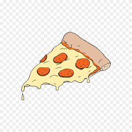

피자 만들기

- 양파와 피망, 버섯을 채 썰어 준비해주세요
-
빵에 토마토소스를 바르고 피망, 버섯, 베이컨, 치즈 순으로 토핑해
주세요.
- 예열된 오브에 넣고 230도 10~15분간 구워주세요
참고 :
https://cdn.dominos.co.kr/renewal2018/w/html/event/ad/22030801/event.html?gclid=Cj0KCQjw_4-SBhCgARIsAAlegrUKe5QTBm9URqj4VWLp2J2MBHfKfo1MsEmM1zzlhyOTERAo8jO6vD0aAlOREALw_wcB